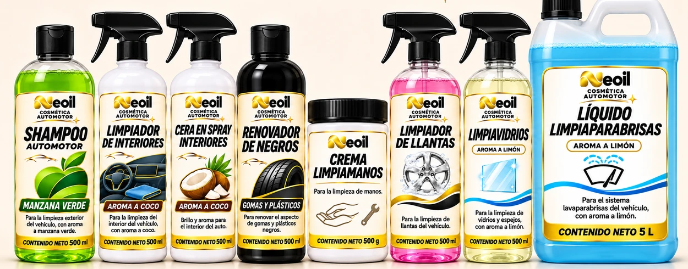

Cosmética
Automotor.
Estamos preparando nuestra línea para el cuidado del auto. Conocé los ocho productos en desarrollo.
Ver los productos
La línea completa.

- Lavado exterior
Shampoo automotor
Shampoo neutro con brillo para el lavado manual. Aromas previstos de manzana verde, banana y uva.
- Ruedas
Limpiador de llantas
Limpieza de llantas.
- Terminación exterior
Renovador de negros
Para recuperar el aspecto de plásticos negros y neumáticos.
- Habitáculo
Limpiador de interiores
Limpiador espumante para el interior del vehículo, con aroma a coco.
- Habitáculo
Cera en spray para interiores
Para dar brillo y aroma a coco al interior del auto.
- Cristales
Limpiavidrios
Para limpiar vidrios y espejos del vehículo.
- Sistema lavaparabrisas
Líquido limpiaparabrisas
Líquido con aroma a limón para el depósito del lavaparabrisas.
- Taller
Crema limpiamanos
Crema con abrasivo para la limpieza de manos en el taller.